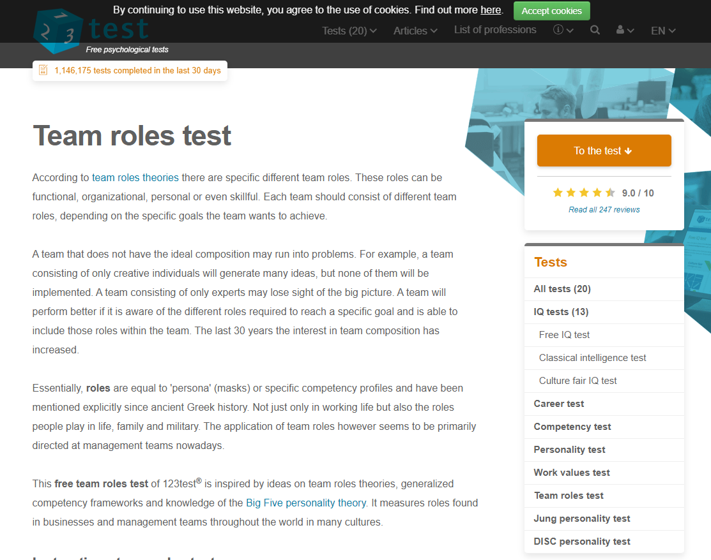

Myer-Briggs test
The result of the “Myers-Briggs” test, is the “Adventurer” (16 personalities 2019 Adventurer). Adventurers are introverted, they’re hard to predict in a behavioural sense, often independent and opinionated.
(16 personalities 2019 Adventurer). Some traits to the adventurer that are positive are: curiosity and validating their ideas; diplomatic and empathetic to others (16 personalities 2019 Adventurer).
The test summary results indicated that adventurers:
“use aesthetics, design and their choices and actions to push the limits of social convention. Adventurers enjoy upsetting traditional expectations” (16 personalities 2019 Adventurer).
VAK Test (PersonalityMax)
The learning test from personalitymax calculates percentages from three categories, which the strongest style of learning is after answering a set of questions. The learning test concluded the learning style category I’m suited to most is through physically involved activities (Kinesthetic) (personalitymax 2019). Through experience is the optimum method which is suited to the learning style (personalitymax 2019).
123 Test - Team Roles
The final test, a team rolls test conducted through 123Test is a basic assessment of what roles are suited to a person, and how likely suited they are to those roles based on percentages. The Three strongest roles indicated by the percentage of 17 for all are; Executive or organiser; Analyst; and Expert that prefers independence within a team (123Test 2019).
Compatibility to Work in a Team
As a result of the tests, indicated to me that I have the capacity to work in a team but as an individual. I need to communicate with others in the team to optimise my learning experiences. Conflicts and issues occur within a team, and I must analyse my strengths, weaknesses and work out a way to resolve issues. There are methods I need to apply in order to contribute to team assessments and individual learning to be more effective. Team roles evaluation outlined the most efficient way for me to collaborate among peers. These tests have given me some insight to how I can manage working in a team.
Potential Issues
As I’m organised and utilise methodical approaches it can be difficult to accept others learning styles and may have conflicting views in ways to accomplish a task. I’m an independent learner and group work isn’t what I’m accustomed to, I can be impatient, and I must learn to adjust. As I need to communicate and I’m empathetic to others, this can be helpful in maintaining collaboration. I’m driven and will contribute to the team as much as possible to achieve our goals.
How to Resolve or Prevent the Issues
Knowing this, it will be prudent to document how to manage myself and being more aware of how and what I’m communicating. Because of the nature of work, as we don’t select who we work with, learning how other individuals behave, learn and communicate will enhance team synergy.